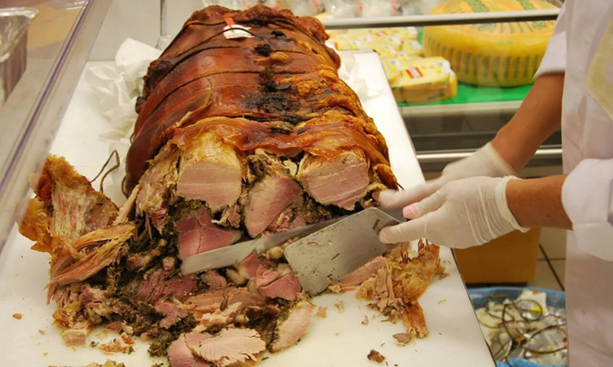

|  | ||||
| Home page | Pizza | Pasta | Tiramisu | Porchetta |
| Porchetta | ||||
| Porchetta is a traditional roast pig dish with a crispy skin and tender meat, seasoned with rosemary, garlic, and fennel. It is slowly roasted and often served as slices for sandwiches or as a main dish. | ||||